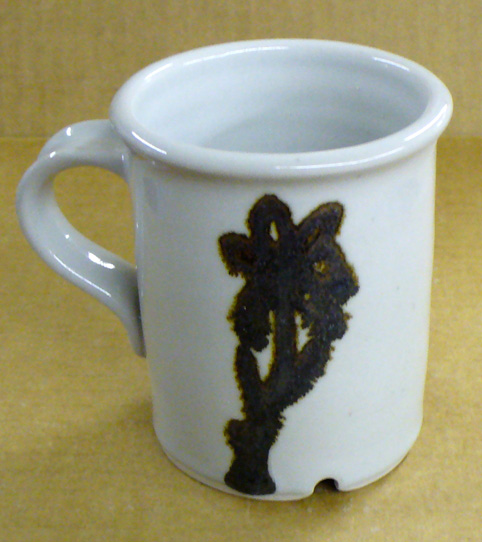
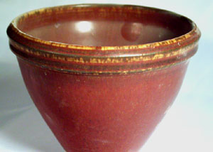
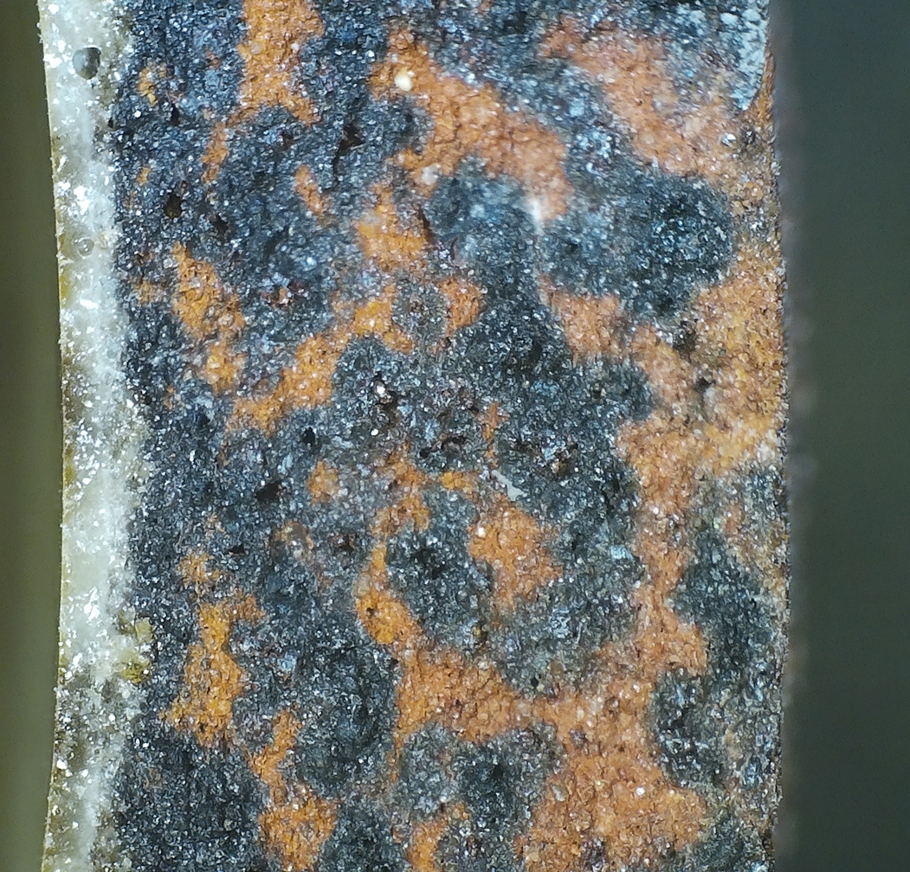

FeO (Ferrous Oxide)
Notes
-Fe2O3 is easy to reduce to the FeO state with a light reduction firing as follows:
Fe2O3 + CO -> 2FeO + CO2
-Some suppliers quote iron in its reduced form as part of a materials formula.
-In clays and glazes, firing in reducing conditions, or with clays containing significant organic matter, the Fe2O3 converts to FeO as early as 900C. FeO is a very powerful flux. Once iron has been reduced and becomes active in glass forming, it is difficult to reoxidize it again. For this reason, reduction firings for iron effects should be light throughout to reduce the iron early before glaze melts. They should then be fired slowly through the 250-500C range to provide adequate time for organics to burn away. A period of clearing in oxidation at the end of a firing does not affect the color of iron in the molten glass.
-FeO is so active as a flux that it can often be introduced by substituting for other fluxes like lead and calcium oxide.
-Most glazes will dissolve more iron in the melt than they can incorporate in the cooled glass. Thus extra iron precipitates out during cooling to form crystals. This behavior is true of oxidation but doubly so of reduction. For example, a typical high-temperature fluid glaze with 15% iron will freeze to a sparkling rust colored mesh of crystals.
-Many popular iron glazes and slips for pottery are based on clays highly stained with iron. For example, Albany slip was used for many years to produce a wide variety of glazes which exploited its unique blend of high iron, low melting point, moderate plasticity, low thermal expansion, low cost and unique character. For example, using Alberta Slip (an Albany substitute) one can make a tenmoku glaze with 90% Alberta slip and a little added iron and feldspar.
-If clay is not allowed to oxidize thoroughly through the 700-900C range during firing, carbon present within will rob the Fe2O3 of its oxygen and escape as CO2 leaving the FeO as an active flux within the body to break it down from within. This is called black coring.
-Iron bearing clays fire much darker in reduction than oxidation. In addition, reduction fired iron bodies experience sudden color changes from red or tan to dark brown across a narrow temperature range characteristic to each formulation. Classic iron reduction mottled effects are created by firing to the transition point where color is just changing producing light and dark patching of color as the darker color invades the surface.
-In reduction firings it can produce greens and blues (i.e. celadons), and yellows and maroons (i.e. mustard, oatmeal glazes). In higher amounts it saturates to produce crystalline deep brown and black effects (i.e. tenmoku 10-13% and kaki 13%+).
-Iron pyrite and similar minerals often contaminate stonewares and fireclays; and they are responsible for the popular speckling effects in reduction fired stonewares.
Iron oxide powder is available in many colors. Here are three.

This picture has its own page with more detail, click here to see it.
How can there be so many colors? Because iron and oxygen can combine in many ways. In ceramics we know Fe2O3 as red iron and Fe3O4 as black iron (the latter being the more concentrated form). But would you believe there are 6 others (one is Fe13O19!). And four phases of Fe2O3. Plus more iron hydroxides (yellow iron is Fe(OH)3).
Here is what can happen with iron-oxide-based overglazes

This picture has its own page with more detail, click here to see it.
Since iron oxide is a strong flux in reduction, iron-based pigments can run badly if applied too thickly.
FeO (iron oxide) is a very powerful flux in reduction

This picture has its own page with more detail, click here to see it.
This cone 10R glaze, a tenmoku with about 12% iron oxide, demonstrates how iron turns to a flux, converting from Fe2O3 to FeO, in reduction firing and produces a glaze melt that is much more fluid. In oxidation, iron is refractory and does not melt well (this glaze would be completely stable on the ware in an oxidation firing at the same temperature, and much lighter in color).
Iron-Red high temperature reduction fired glaze

This picture has its own page with more detail, click here to see it.
This recipe, our code 77E14A, contains 6% red iron oxide and 4% tricalcium phosphate. But the color is a product of the chemistry. The glaze is high Al2O3 (from 45 feldspar and 20 kaolin) and low in SiO2 (the recipe has zero silica). This calculates to a 4:1 Al2O3:SiO2 ratio, very low and normally indicative of a matte surface. The iron oxide content of this is half of what is typical in a beyond-tenmoku iron crystal glaze (those having enough iron to saturate the melt and precipitate as crystals during cooling). The color of this is also a product of some sort of iron crystallization, but it is occuring in a low-silica, high-alumina melt with phosphate and alkalis present. Reducing the iron percentage to 4% produces a yellow mustard color (we thus named this "Red Mustard").
Reduction high temperature iron crystal glaze

This picture has its own page with more detail, click here to see it.
This is what about 10% iron and some titanium and rutile can do in a transparent base glossy glaze (e.g. G1947U) with slow cooling at cone 10R on a refined porcelain.
Ceramic Oxide Periodic Table

Pretty well all common traditional ceramic base glazes are made from less than a dozen elements (plus oxygen). Go to the full picture of this table and click or tap each of the oxides to learn more (on its page at digitalfire.com). When materials melt, they decompose, sourcing these elements in oxide form. The kiln builds the glaze from them, it does not care what material sources what oxide (assuming, of course, that all materials do melt or dissolve completely into the melt to release those oxides). Each of these oxides contributes specific properties to the glass. So, you can look at a formula and make a good prediction of the properties of the fired glaze. And know what specific oxide to increase or decrease to move a property in a given direction (e.g. melting behavior, hardness, durability, thermal expansion, color, gloss, crystallization). And know about how they interact (affecting each other). This is powerful. A lot of ceramic materials are available, hundreds - that is complicated when individual materials source multiple oxides. Viewing a glaze as a simple unity formula of ceramic oxides is just simpler.
Close up of black coring: Is it carbon? Nope. Is it always bad? Nope.

This picture has its own page with more detail, click here to see it.
This is a closeup of a shard from the wall of a thrown vessel. The clay is an iron stoneware, Plainsman Fire-Red with added feldspar, fired in reduction at cone 10. The reduction was not heavy, the kiln was fired with enough air to burn almost all the gas leaving only a slight yellow (but mostly blue) flame at the damper. Is this black color carbon? Consider the following. Carbon is refractory, this is glassy. During bisquit firing the carbon was burned out of this. These black zones have a hole at their centers. This is black iron, a strong flux. The iron is coming from large particles (20-40 mesh) of iron pyrite. In the reduction atmosphere, the natural Fe2O3 is being robbed of oxygen (from both the decomposition of neighboring particles and the atmosphere of the kiln) and converting to FeO. That is melting and interacting with the feldspar to soak into the surrounding matrix. Contrary to what most people think this does not weaken the clay, it strengthens ware (provided the feldspar is present). Once the black has permeated the entire matrix of a piece it becomes very strong (even with a hammer it was unexpectedly difficult to break ware to get these shards). Note the right side is not glaze-covered, if it had been the entire matrix would be black. But still strong.
A cone 10R high iron glaze has run off the vase during firing. And crystallized.

This picture has its own page with more detail, click here to see it.
Iron, in the FeO form, is among the most powerful of fluxes in reduction firing. That fluxing action, dependent on the percentage of iron oxide in the recipe, produces two obvious consequences: Running (depending on the degree of reduction) and crystallization (depending on the speed of cooling and the chemistry of the glaze hosting the iron). This piece was slow-cooled during firing, resulting in total crystallization of the surface. The crystals are larger and densely packed at the neck. Their presence, as a thin surface layer, has completely matted it. And, because of the fluxing power of the FeO (present because of the reduction atmosphere in the kiln) enough glaze ran downward off the piece that it was left sitting in a pool of molten glass.
Links
| Materials |
Iron Oxide Black
|
| Oxides | Fe2O3 - Iron Oxide, Ferric Oxide |
Mechanisms
| Glaze Color | When 1-5% iron is used in a transparent reduction glaze which has some calcia and potash (barium also helps) celadon glazes are produced. 'Celadon' glazes are glossy shades of green which exhibit depth of color due to suspended micro-bubbles in the glass. |
|---|---|
| Glaze Color | A typical high-temperature fluid reduction glaze with 15% iron will freeze to a sparkling rust colored mesh of crystals. Alkaline glazes work best. Barium can impede this effect. |
| Glaze Color | Saturated reduction iron glazes normally firing to black in reduction will move toward brown if alumina is high, toward blue if alumina is low. |
| Glaze Color | The presence of phosphorous pentoxide, lithia and soda also encourage blue in both normal and saturation conditions in reduction firing. Iron glazes will move toward blue if alumina is low. |
| Glaze Color | Classic reduction black-breaking-to-brown tenmoku glazes are made with 8-12% iron. |
 PayPal | No tracking, No ads, No paywall, No transient content! Just organized, concise information constantly updated and improved. Was this helpful? Consider supporting me. |
| By Tony Hansen Follow me on        |  |
Got a Question?
Buy me a coffee and we can talk 

https://digitalfire.com, All Rights Reserved
Privacy Policy